Terminal de IPython#
La Terminal IPython te permite ejecutar comandos e interactuar con datos dentro de los intérpretes IPython.
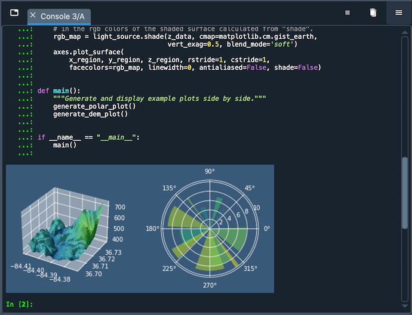Para lanzar una nueva instancia de IPython, vaya a Nueva terminal (configuración por defecto) en el menú Terminales, o usa el atajo de teclado Ctrl-T (Cmd-T en macOS) cuando la consola está focalizada.
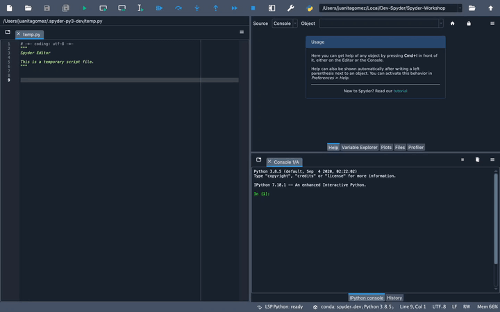Desde el mismo menú, puedes dejar de ejecutar código con el Interrumpir el núcleo, limpia el namespace de una consola con Eliminar todas las variables, o relanza una nueva con Reiniciar el núcleo. Como cada consola se ejecuta en un proceso separado, esto no afectará a ningún otro que hayas abierto, y podrás probar fácilmente tu código en un entorno limpio sin interrumpir tu sesión principal.
Funciones disponibles#
Cualquier Terminal de IPython, ya sea externa o iniciada por Spyder, soporta:
Completado automático de código
Información sobre la función en tiempo real
Integración GUI completa con el depurador mejorado de Spyder.
El Explorador de variables, con editores gráficos para muchos objetos de Python incorporados y de terceros.
Visualización de gráficos de Matplotlib en el panel de Gráficos de Spyder, si se selecciona el backend En línea en , y en línea en la consola si la opción Silenciar los gráficos en línea no está marcada en el menú de opciones del panel de Gráficos.
Para obtener información sobre las características, comandos y capacidades incorporadas en IPython mismo, vea la IPython documentation.
Consolas especiales#
Spyder también soporta varios tipos de consolas especializadas. Una Sympy console permite crear y mostrar expresiones matemáticas simbólicas dentro de Spyder. Una Cython console te permite usar el lenguaje de Cython para acelerar tu código y llamar a funciones C directamente desde Python. Finalmente, una Pylab console carga las funciones comunes Numpy y Matplotlib por defecto; mientras que esto está obsoleto y fuertemente desaconsejado para el nuevo código, todavía puede ser usado si es necesario para scripts heredados que lo necesiten.
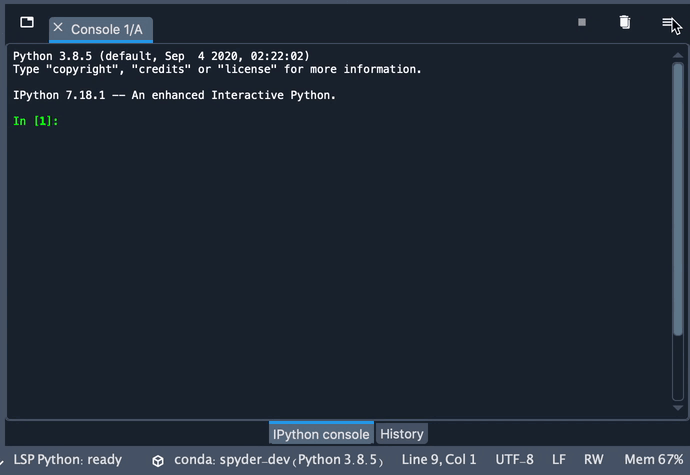Usar núcleos externos#
Puedes conectarte a los núcleos externos locales y remotos (incluidos los administrados por Jupyter Notebook o QtConsole) a través del diálogo Conectarse a un núcleo existente bajo el menú de Terminales. Para que esta característica funcione, una versión compatible del paquete spyder-kernels debe ser instalado en el entorno o máquina en la que el núcleo externo está corriendo.
Conectar a un núcleo local#
Para conectarse a un núcleo local que ya se está ejecutando (por ejemplo, uno iniciado por Jupyter notebook):
Ejecuta
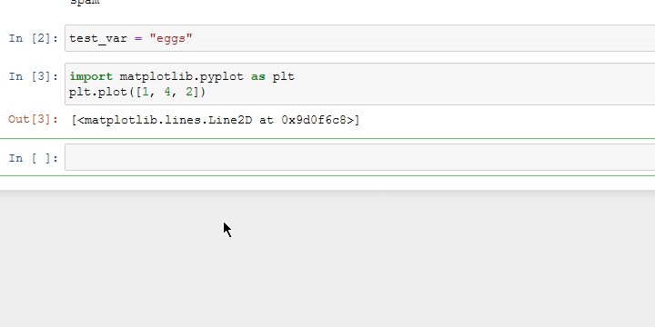%connect_infoen el notebook o la consola a la que quieres conectarte, y copia el nombre de su archivo de conexión al núcleo, que se muestra después dejupyter <app> --existing.En Spyder, haz clic en Conectarse a un núcleo existente desde el menú Terminales, y pega el nombre del Archivo de conexión del paso anterior.
Por conveniencia, los números de ID del núcleo (por ejemplo
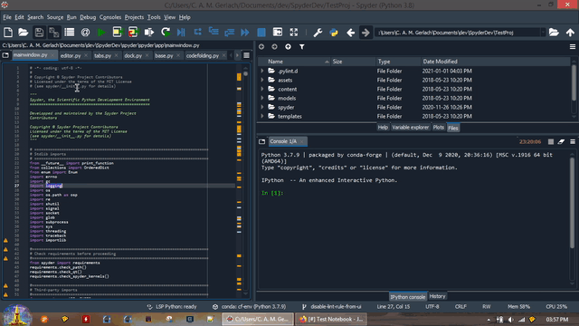1234) ingresados en el campo de ruta del archivo de conexión se ampliarán a la ruta completa del archivo, por ejemplojupyter/runtime/dir/path/kernal-id.json.Haz clic en OK para conectarte al núcleo.
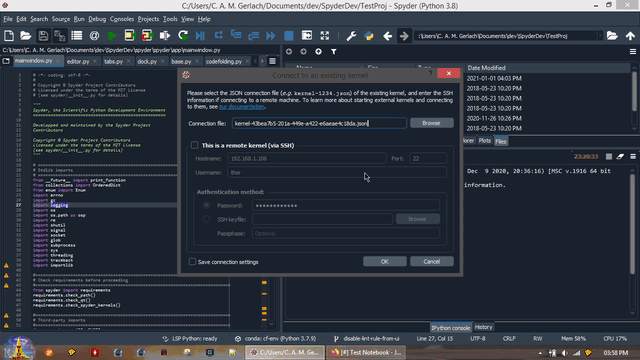
Conectar a un núcleo remoto#
Para conectarse a un núcleo en una máquina remota:
Inicia un núcleo Spyder en el host remoto, si aún no se está ejecutando, con
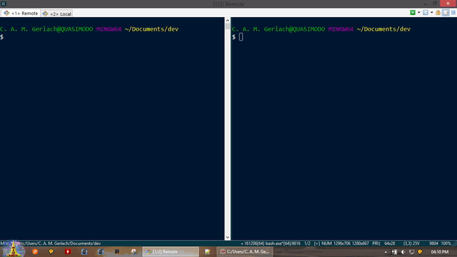python -m spyder_kernels.console.Copia el archivo de conexión del núcleo (
jupyter/runtime/dir/path/kernel-pid.json) a la máquina en la que estás ejecutando Spyder.Puedes obtener
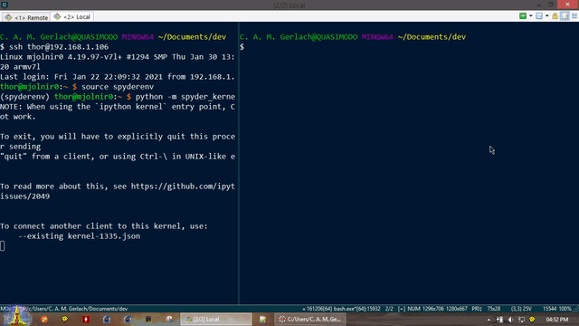jupyter/runtime/dir/pathejecutandojupyter --runtime-diren el mismo entorno de Python que el kernel. Generalmente, el archivo de conexión que estás buscando será uno de los más recientes en este directorio, correspondiente a la hora en que inició el núcleo externo.Haz clic en Conectarse a un núcleo existente desde el menú Terminales, y busca o ingresa la ruta al archivo de conexión desde el paso anterior.
Por conveniencia, los números de ID del núcleo (por ejemplo,
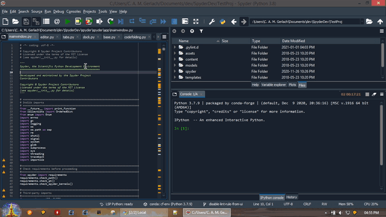1234) introducidos en el campo de ruta del archivo de conexión se expandirán ajupyter/runtime/dir/path/kernal-id.jsonen tu máquina local, si has copiado el archivo de conexión allí.Marca la casilla Este es un núcleo remoto (via SSH) e ingresa el Servidor o dirección IP, nombre de usuario y puerto al cual conectarse en la máquina remota. Luego, ingresa la contraseña de
nombre de usuarioen la máquina remota, o selecciona un archivo de clave SSH registrado en la máquina remota, normalmente ubicado en el directorio.sshen tu carpeta de inicio en la máquina local y llamado a menudoid_rsa. Si marcas Guardar ajustes de conexión, estos detalles serán recordados y rellenados automáticamente la próxima vez que abras el diálogo.Ten en cuenta que Puerto es el número de puerto en tu máquina remota en el que el daemon SSH (
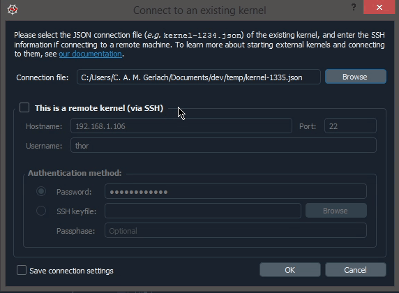sshd) está escuchando, típicamente 22 a menos que tú o tu administrador lo hayan configurado de otra manera.Haz clic en OK para conectarte al núcleo
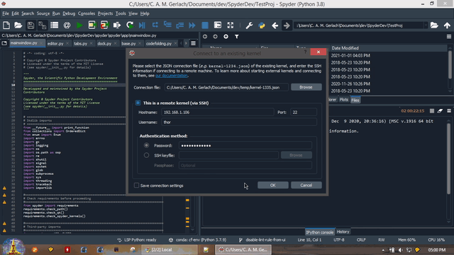
Para obtener más detalles técnicos sobre la conexión a los núcleos remotos, consulta la página Connecting to a remote kernel en el libro de Cookbook IPython.
Recargar módulos modificados#
Al trabajar en una sesión interactiva, Python sólo carga un módulo desde su archivo fuente una vez, cuando se importa por primera vez.
El Recargador de Módulos de usuario (RMU) de Spyder recarga automáticamente módulos en las consolas de IPython existentes siempre que sean modificadas y reimportadas. Con la RMU activada, puedes probar los cambios en tu código sin reiniciar el núcleo.
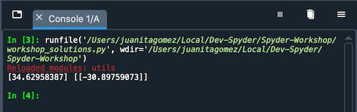RMU está activado por defecto, y te proporcionará un mensaje en rojo Módulos recargados: en la consola listando los archivos que se han actualizado cuando está activado. Si lo deseas, puedes activarlo o desactivarlo y evitar que se recargen módulos específicos, bajo .